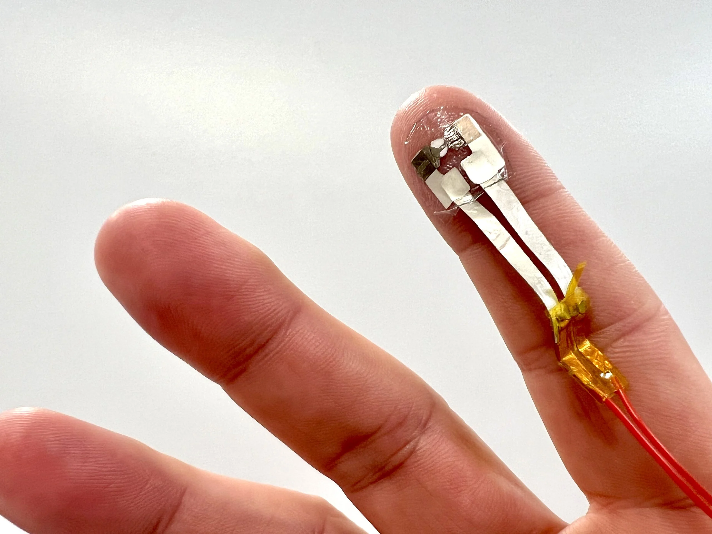

Evolución
Las pantallas táctiles han experimentado una evolución fascinante desde su invención hasta convertirse en una parte integral de la tecnología moderna. Su desarrollo ha transformado la interacción humano-computadora, permitiendo interfaces más intuitivas y accesibles.
Primeras ideas y desarrollos tempranos (1960-1980)
En 1965, E.A. Johnson desarrolló el primer concepto de pantalla táctil capacitiva, lo que marcó el inicio de esta tecnología.
En 1971, Samuel Hurst creó la Elograph, la primera pantalla táctil resistiva comercial, utilizada en aplicaciones industriales.
Las pantallas táctiles comenzaron a implementarse en cajeros automáticos y quioscos en los años 70, aunque su funcionalidad era limitada y principalmente enfocada en la entrada de datos.
.png)
1980-2000: Introducción en el Mercado
En 1983, Hewlett-Packard lanzó el HP-150, una de las primeras computadoras con pantalla táctil infrarroja, aunque su uso fue limitado.
A finales de los 90, el IBM Simon se convirtió en el primer teléfono móvil con pantalla táctil, introduciendo la tecnología en dispositivos portátiles, aunque con capacidades rudimentarias.
Las pantallas resistivas y capacitivas comenzaron a ser más comunes en dispositivos de uso especializado, como sistemas de punto de venta.
2001-2010: Revolución Multitáctil
En 2007, el lanzamiento del iPhone de Apple marcó un hito en la tecnología de pantallas táctiles al popularizar las pantallas multitáctiles capacitivas. Esto permitió gestos intuitivos como deslizar y hacer zoom.
Las pantallas táctiles se convirtieron en la norma en smartphones y tablets, eliminando la necesidad de teclados físicos y mejorando la experiencia del usuario.
Esta era también vio el desarrollo de tecnologías que mejoraron la durabilidad y la precisión de las pantallas táctiles, haciéndolas más accesibles para el público en general.
2010-presente: Evolución significativa
Desde 2010, las pantallas táctiles han evolucionado significativamente en varios aspectos:
Tecnología de Pantallas:
-Capacitivas: Aunque ya existían, en 2010 se popularizaron en dispositivos móviles, ofreciendo mayor sensibilidad y precisión.
-OLED y AMOLED: Mejoras en la calidad de imagen, con colores más vibrantes y negros más profundos, se hicieron comunes en smartphones y tablets.
Multitouch:
- La capacidad de detectar múltiples toques simultáneamente se perfeccionó, permitiendo gestos más complejos y mejorando la interacción.
Haptic Feedback:
- Se integraron tecnologías que proporcionan retroalimentación táctil, mejorando la experiencia del usuario al hacer que las interacciones se sientan más reales.
Pantallas Flexibles:
- A partir de 2018, comenzaron a surgir dispositivos con pantallas plegables, como los teléfonos Galaxy Fold y otros, marcando un cambio en el diseño y la funcionalidad.
Tecnologías Avanzadas:
-Reconocimiento de Gestos: Algunos dispositivos comenzaron a implementar controles sin contacto mediante reconocimiento de gestos.
-Realidad Aumentada: La integración de pantallas táctiles en dispositivos de realidad aumentada mejoró la interactividad y la experiencia del usuario.
Resoluciones y Tamaños:
- Las pantallas han aumentado en resolución, con más dispositivos adoptando 4K y pantallas más grandes, ofreciendo una mejor experiencia visual.
Interfaz de Usuario:
- La evolución de sistemas operativos como Android y iOS ha llevado a interfaces más intuitivas y adaptadas a la interacción táctil.
Uso en Nuevos Dispositivos:
- Las pantallas táctiles no solo se limitan a teléfonos y tabletas, sino que ahora están presentes en electrodomésticos, automóviles, kioscos y más.
Estas innovaciones han hecho que la tecnología de pantallas táctiles sea más accesible, eficiente y funcional, transformando la forma en que interactuamos con los dispositivos.
Taxles
Un taxel es un píxel táctil, este consta de un sensor que mide la fuerza en un único punto. Un dispositivo complejo puede tener más de un taxel. En este caso, se usa el término como el punto de generación de fuerza.
Es un tatuaje electrónico ultrafino que permite tocar objetos en entornos virtuales.
Imagina que tocar la pantalla no solo sea visual, sino también tangible.

Como funciona
El funcionamiento de Taxles es muy simple y efectivo. Al activarse, un electrodo en el tatuaje genera un aumento localizado de temperatura, generando una "bolsa" de aire que, al expandirse, causa un movimiento en las capas del tatuaje que se transmiten como sensaciones táctiles al usuario. Además, su facilidad de eliminación lo hace práctico y seguro de usar.
Este fusiona los beneficios de los dispositivos de tatuaje como la ligereza, el grosor extremadamente fino, la sencillez de uso y la duración limitada con la capacidad de replicar una sensación táctil. Estos factores lo hacen un candidato idóneo como dispositivo activo portátil para usarse en diversas aplicaciones. Por ejemplo, realidad virtual, pantallas táctiles braille, feedback háptico.
Beneficios

Un caso verdaderamente fascinante es el de individuos con miembros amputados que emplean prótesis y, evidentemente, no pueden sentir ninguna sensación táctil. Ellos tienen la habilidad de emplear la extremidad artificial para tocar, agarrar o manipular objetos, pero solo dependen de la revisión visual para confirmar si están ejecutando correctamente la labor.
Numerosos estudios enfocados en la incorporación de sensores de fuerza en la prótesis (en la yema del dedo) buscaron identificar si el amputado está tocando algo y posteriormente convertir esta información en una retroalimentación táctil mediante la conexión a electrodos situados en otras áreas del cuerpo, como el antebrazo.
El tatuaje electrónico desarrollado se puede utilizar en este escenario como una forma no invasiva de reproducir sensaciones táctiles, proporcionando información si la extremidad artificial está tocando algo.
También tenemos el caso de las personas con discapacidad visual que utilizan braille para leer un texto.
Últimamente, el interés por la posibilidad de desarrollar nuevas pantallas táctiles braille sigue aumentando.
Según el creador esto se hará de la siguiente forma "un único dispositivo que incluye una matriz de taxels que se pueden activar selectivamente para reproducir los caracteres de aquel alfabeto. En este caso, por supuesto, es necesario fabricar más taxels y no solo uno como en el caso del tatuaje."